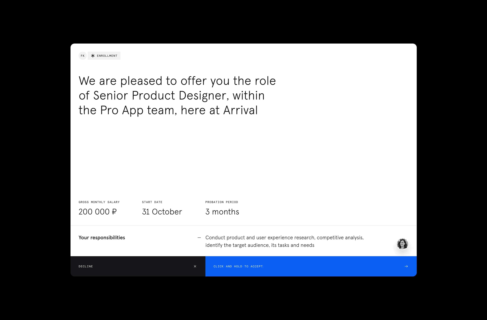
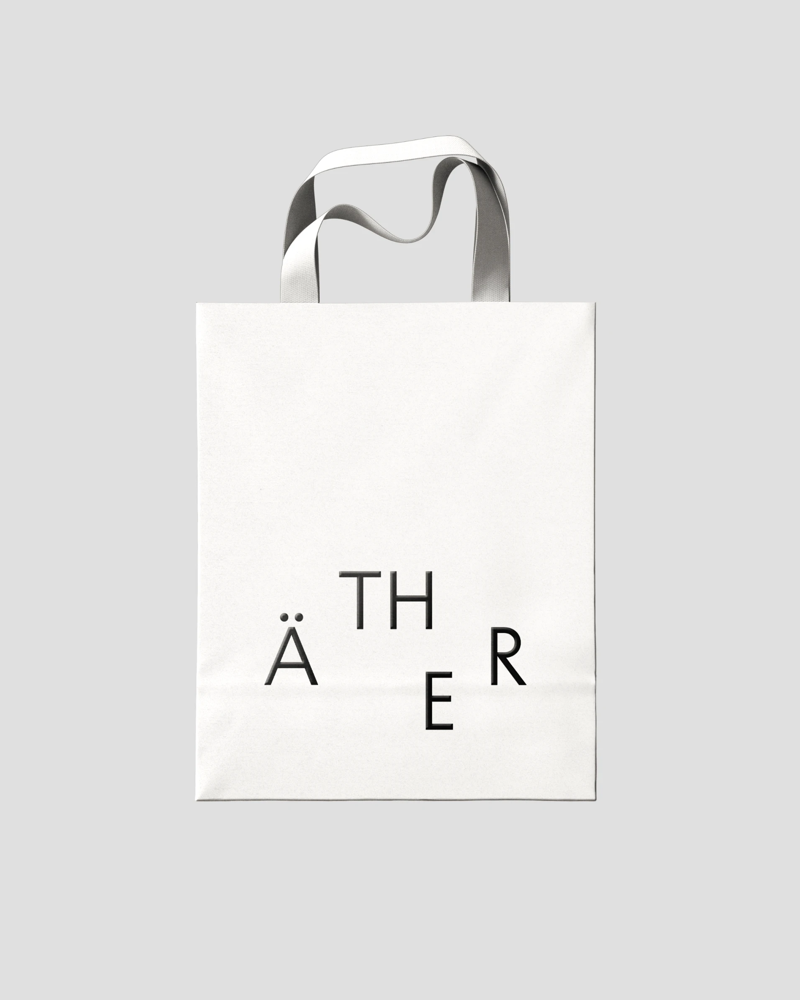
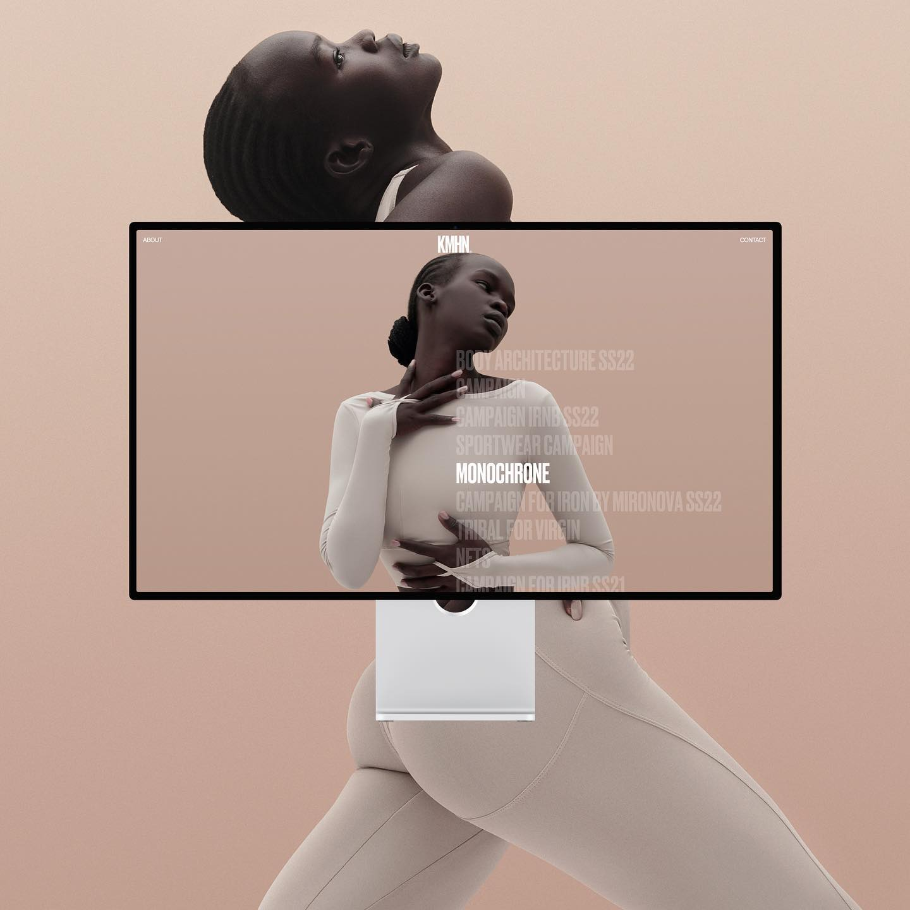
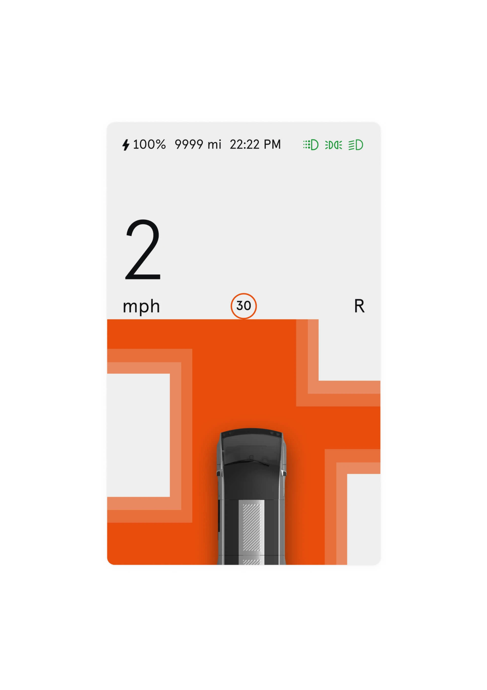
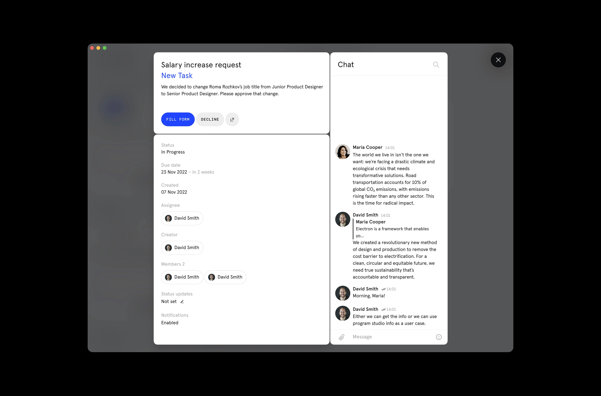
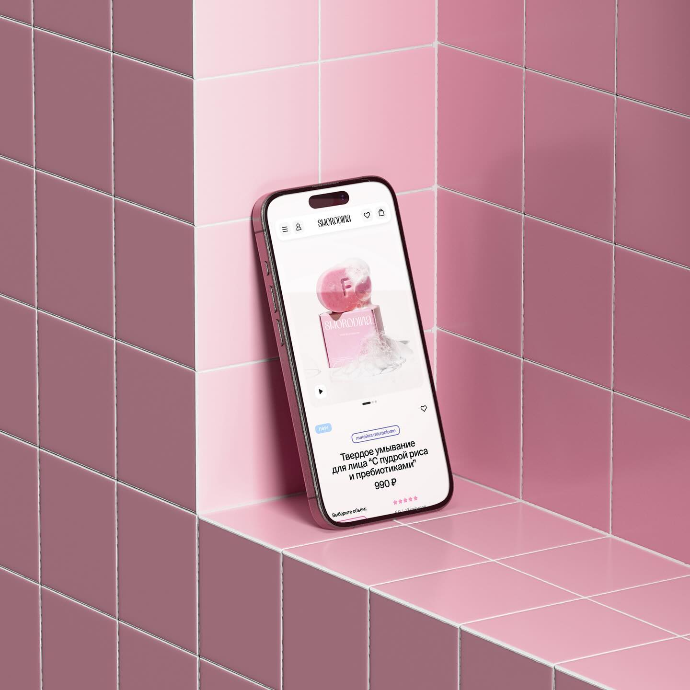

Оля делает «Подписные изделия» в Калининграде, до этого три года в «Додо». Дизайн для неё помощь продукту; если можно что-то не сделать, лучше не сделать.
С чего бы ты начала разговор про дизайн-культуру? Какая она для тебя?
Этот вопрос для меня самый абстрактный, потому что и ответ часто абстрактный. Я не из тех дизайнеров, которые очень превозносят дизайн как дисциплину или как профессию в жизни. Это важно, но смотря каким дизайном ты занимаешься и как ты им занимаешься.
Мне кажется, если ты делаешь своё дело, ну, понятно, ты не спасаешь мир и не спасаешь людей на работе, мне кажется важным любую работу делать на максимум. Просто добросовестно. Есть джун, есть медведь, и у всех разный вклад, который они могут внести сейчас. Но каждый может добросовестно относиться к работе. Я работаю с прям супер-крутыми дизайнерами, которые за час могут вложить в проект как десять джунов. Но это не значит, что каждый отдельный начинающий специалист от этого становится менее ценным. Если человек хочет расти, он будет расти и что-то вкладывать.
Сам дизайн для меня – это помощь продукту, делу или проекту. А «дизайн ради дизайна» очень распространён, и я вижу его, наверное, больше, чем какой-то хороший дизайн, который реально что-то улучшает в продукте, его видимость или функцию. Этого меньше, чем просто «дизайнерских приёмов»: иногда смотришь и думаешь «блин, классный приём». Но тут мог быть любой другой.
Когда я начинала, дизайн был перспективная профессия, но ещё не такая популярная. Сейчас дизайнеров много, и понятие сильно размылось. Для кого-то это украшательство. Это тоже подход, но мне он не подходит. У нас и так много визуального мусора и физического мусора. Если есть возможность что-то не сделать, то лучше не сделать.
Если есть возможность что-то не сделать, то лучше не сделать.
– Оля Бажанова
Расскажи про путь. Какие точки на тебя повлияли?
У меня профильное образование, графический дизайн. Я всегда хотела работать либо с природоохранными проектами, либо с проектами с открытой культурой бренда, без бюрократии. Не очень хотелось в большие корпорации. У меня сестра-близнец работала в Яндекс.Музыке три года, и я знаю специфику: в больших компаниях – много делений на сервисы, маленькие команды, и нельзя сказать заранее, что попадёшь в команду, которая тебе подходит по духу. Проще ориентироваться на конкретный бренд, который четко следует своим ценностям на всех уровнях, не только на уровне внешней коммуникации.
Сначала я работала в агентстве, которое занималось исключительно брендингом для природоохранных зон в России. Это была работа мечты. Но там было сложно идеи пушить. Очень вертикальная система, не было простора для новых форматов. Мне ближе горизонтальная: где у каждого человека есть свой опыт, и он ценен. Даже если это джун, у него может быть намного богаче опыт в какой-то сфере, который обогатит проект.
Потом меня взяли в «Додо Пиццу». Я проработала там три года в инхаус-команде в разных ролях. Изначально просто коммуникационным дизайнером, который делает спецпроекты. На год уходила в детский стартап в Дубае от «Додо», там была арт-директор слэш дизайнер. Мне «Додо» очень нравится в культуре, в открытости. У меня был лидер Толя Малахов, который, мне кажется, очень много во мне взрастил в плане культуры общения с командой и подхода к работе.


Что именно ты у него подсмотрела?
То, как можно давать фидбек. Хвалишь, и потом комментируешь. Можно так упростить, реально. Это всегда было просто. Мне попадались люди, которые либо не очень хорошо выдают, либо дают так, знаешь, как будто им что-то не нравится, но сами не понимают, что именно. А Толя мог часто сказать, что не понимает, в чём проблема. Подумает, вернётся.
Это коммуникация, которой я научилась и стараюсь придерживаться: человек на управляющей позиции – это не значит, что он всегда знает, что правильно. И похвалить реально важно, чтобы человек старался дальше, даже если это пока не очень хорошо выглядит. Почти всё можно докрутить до очень хорошего результата.

Какой проект сильнее всего на тебя повлиял?
Мы тогда делали игру в приложении. Официально она называлась «Хвостики». На самом деле это была Тамагочи. Смешно, что у нас не было команды, которая когда-либо делала игры. Не было иллюстраторов. Каждый из нас всё делал в первый раз. Сроки – полтора месяца. Уже шли разговоры: давайте отменим. А я говорила: «Нет, успеем».
Спала очень мало. Изучала и делала прям в процессе. Мне очень хотелось, чтобы проект запустился. Когда пользователи заходили и играли в эту игру, каждый пользователь в день мог отдавать условно по рублю в фонд, который мы выбрали, «Детки». В итоге мы собрали, кажется, два миллиона. Для фонда это было нехило.
Проект был реально собран на коленке. Но пользователи до сих пор пишут: «Верните Хвостиков, верните моего щенка к жизни». Думали реально внедрить эту игру на постоянку, дети играли. Это был проект, который сильно на меня повлиял. Я всегда ищу способы, чтобы и заработать на жизнь, и чтобы работа приносила пользу.
Каждый пользователь в день мог отдавать по рублю в фонд. В итоге мы собрали два миллиона.
– Оля Бажанова
Ты упоминала, что тебя волнует этика. Расскажи, как это влияет на твои проекты.
Мой основной ориентир – минимизировать свой личный вклад в то, с чем я не могу в своей персональной жизни себя соотносить. Я не буду участвовать в проектах, связанных с эксплуатацией животных.
Буквально вчера друг рассказал, он звукорежиссёр на фрилансе, ему пришёл заказ. Какая-то российская компания лечит Альцгеймер с помощью внедрения нейрочипов. Понятно, что это экспериментируется на животных, это даже можно не оговаривать. Но они ещё делают голубей-дронов и что-то с коровами: чтобы можно было контролировать удой по кнопочкам. Если абстрагироваться, какие плюсы? Можно завести меньше коров и сэкономить на скоте, уменьшить влияние на озоновый слой, метан и всё такое прочее. Плюсы есть бесспорно. Но сама эксплуатация животных – причём такая жёсткая – у них это называется Smart Animals. Для меня это «Чёрное зеркало» максимально. Если друг ещё размышлял, стоит ли вписываться, я бы не думала.
Бывают разные степени влияния продукта – на среду, на людей, на животных. Хочется быть в проектах, которые либо нейтральны, либо стремятся к нейтральности, либо в идеале помогают. Я решила для себя не вписываться в проекты, которые вредят. По крайней мере, очень сильно вредят, потому что большая часть проектов всё равно так или иначе наносит какой-то вред: производство коробок для пиццы – это упаковка, это всё равно вред. Нейтральные проекты найти сложно, их единицы. Я стремлюсь к наименьшему вреду.
Это сложно, особенно когда ищешь работу. Сложно отказаться от высокооплачиваемого проекта, который можешь сделать за неделю и неплохо заработать, просто из-за этих принципов. Но мне потом с собой жить, а деньги уйдут и придут из какого-то другого места.
Сложно отказаться от проекта за неделю и разбогатеть. Но мне потом с собой жить.
– Оля Бажанова



Ты ещё рисуешь, делаешь выставки. Это про что для тебя?
Я делала это с момента, когда вообще начала что-то делать про животных, про природу, про внимание к этим вещам. Где-то два года назад это оформилось у нас с сестрой во что-то более похожее на формат: раньше было четыре человека, теперь нас двое. Мы просто делаем то, что хотим. Это свобода, и часто потом пригождается.
Например, на прошлых выходных у нас была выставка, потом аукцион в пятницу. Заработали двадцать тысяч с наших рисунков и отправили всё в местные фонды. На следующий день помогали ребятам, у которых веганское мобильное кафе в Калининграде: они появляются в разных частях города. Сделали для них рисунки, печатали на футболках, там у них огромный утюг и специальные наклейки.
Хочется поддерживать людей, которые в меньшинстве. Когда веган-активисты уехали из России, на весь Калининград – одно веганское кафе. И то готово продать бизнес, потому что не так уж много людей ходит. Это, наверное, можно назвать отдушиной. Это то, что я делала бы, даже если бы за это не платили. Всё, что мы зарабатываем с этого проекта, переводим в фонды. Пока, к счастью, у нас есть на что жить.
Ты много рисуешь от руки. Каким должен быть, по-твоему, дизайн в первую очередь – крафтовым, диджитальным?
Есть два лагеря. Есть дизайнеры, которые вообще не рисуют. И есть те, кто сначала всё нарисует, потом куда-то переведёт. Я ближе ко вторым. Но изначально всё идёт от идеи. Иногда мне очень хочется иллюстрацию. У меня настроение, я хочу её сделать. Но проект может решиться вообще одной буквой. Тут всё ясно, иллюстрировать незачем.
Мой процесс выглядит так: сначала какой-то брейншторм, мозг так работает; я это зарисовываю, иногда, если нужно показать людям, которые не дизайнеры, а ближе к цифрам.
В универе у нас все преподаватели были просто художниками. Ни одного дизайнера, хотя факультет дизайнерский. Они говорили: «Нарисуй настолько, насколько можешь, драфт или скетч того, что будешь рисовать потом. Потому что, скорее всего, ты потом не нарисуешь так подробно, как тебе сейчас кажется». Сколько можешь нарисовать – нарисуй. У моей сестры другой подход: у неё скетч, а потом она собирает это в векторе по крупицам, как мозаику. У меня обычно сразу. Если есть возможность отсканировать что-то натуральное и использовать в проекте, это прикольно. Сейчас же переизбыток сгенерированного, вырезанного. Может, это в моём пузыре, но есть усталость от такого.
А с нейросетями ты как сейчас?
У меня очень долго было отрицание. Сейчас вижу пользу. Например, в презентациях. Я хочу сделать вот такую сумку. Мне нужно показать, в идеале не прикладывая тысячу референсов: вот я нарисовала схему, выкройку. Я научилась делать условный мокап с материалами, которые нашла. Для меня это магия.
Иногда презентуешь идею, она говорит: «Это не будет продаваться». Показала мокап Анечке: «Это всё, это хит будущего». Ну, если стоит той подписки, которую я плачу.
Показала мокап Анечке: всё, это хит будущего.
– Оля Бажанова
Расскажи про «Подписные». Они – определённый феномен. У вас внутри есть какие-то принципы, что вы артикулируете как качество?
Я бы не сказала, что могу сейчас сформулировать это окончательно. Я не очень долго тут работаю, присматриваюсь.
Но я не думала, что буду связываться с сувениркой. Для меня это раньше было: «производим то, что на самом деле не нужно». А сейчас думаю про другое. Во-первых, сувенирка будет всегда. И у меня есть возможность повлиять на то, чтобы она производилась из хороших материалов, перерабатываемых, или чтобы у этих вещей была функция. У «Подписных» в целом, мне кажется, души хоть отбавляй – её сколько ни добавляй, не уменьшится.
При этом есть проекты, которые «Подписные» берут, потому что это, скорее всего, принесёт выручку. И есть проекты, которые делают для души. Так работает в любом бизнесе. Мы делаем серию для какого-нибудь музея – пять объектов. Один из них будет продаваться очень хорошо: он не супер специфический, не очень дорогой, базовый. Все остальные более экспериментальные. Это то, во что мы вложили какую-то душу, и они будут продаваться меньше. Но зато…
С ребятами здесь учитывается голос каждого, и это нравится. У нас не очень большая команда – может быть, человек двадцать. Мы все вместе штормим. У ребят из производства очень хорошая насмотренность по сувенирке: они стараются следить за всем, что происходит, в том числе за объектами, которые могли бы быть сувениркой. Не нужно быть специалистом, чтобы что-то придумывать – это только ограничивает. Они даже могут определять и прогнозировать спрос. Я бы хотела этому научиться: бывают предметы, про которые все думают «это вообще никому не зайдёт», а потом – производим, и заходит. Это феномен. Прикольный, короче.
О практике
Оля Бажанова – мультидисциплинарный визуальный автор, иллюстратор.